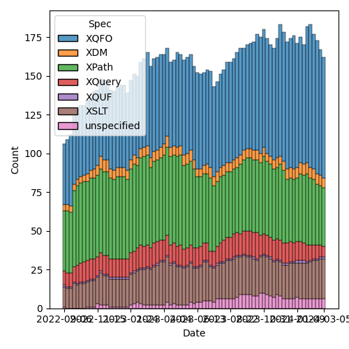
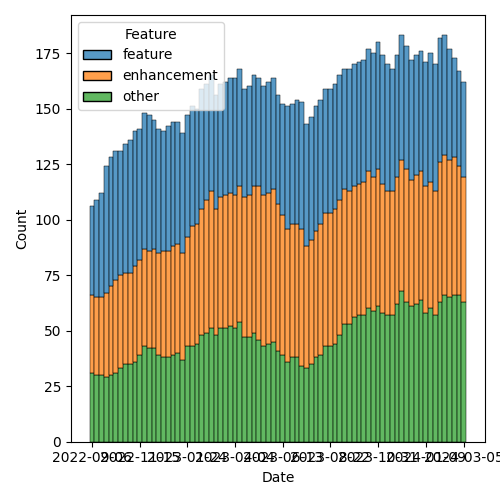

QT4 CG Meeting 069 Minutes 2024-03-12
Table of Contents
- Minutes
- Summary of new and continuing actions
[0/6] - 1. Administrivia
- 2. Technical Agenda
- 3. Any other business
- 4. Adjourned
Meeting index / QT4CG.org / Dashboard / GH Issues / GH Pull Requests
Minutes
Approved at meeting 070 on 19 March 2024.
Summary of new and continuing actions [0/6]
[ ]QT4CG-052-02: NW to consider how to schedule an “editor’s meeting”[ ]QT4CG-063-04: NW to try to add test review to the editorial meeting.[ ]QT4CG-063-06: MK to consider refactoring the declare item type syntax to something like declare record[ ]QT4CG-064-08: NW to open an issue to try to resolve $search to $target consistently.[ ]QT4CG-069-01: MK to list the remaining issues that need discussion.[ ]QT4CG-069-02: NW to coordinate with MK to use the introspection features on the test suite.
1. Administrivia
1.1. Roll call [11/13]
Regrets SF.
[X]Reece Dunn (RD)[ ]Sasha Firsov (SF) [-:30][X]Christian Grün (CG)[X]Joel Kalvesmaki (JK)[X]Michael Kay (MK)[X]Juri Leino (JLO)[X]John Lumley (JLY)[X]Dimitre Novatchev (DN)[X]Wendell Piez (WP)[X]Ed Porter (EP)[ ]Adam Retter (AR)[X]C. M. Sperberg-McQueen (MSM)[X]Norm Tovey-Walsh (NW). Scribe. Chair.
1.2. Accept the agenda
Proposal: Accept the agenda.
- CG: I’d like to talk about divergence between the spec and the test suite.
Accepted, with that ammendment.
1.2.1. Status so far…

Figure 1: “Burn down” chart on open issues

Figure 2: Open issues by specification

Figure 3: Open issues by type
1.3. Approve minutes of the previous meeting
Proposal: Accept the minutes of the previous meeting.
Accepted.
1.4. Next meeting
The next meeting is scheduled for Tuesday, 19 March 2024.
Any regrets for the next meeting?
None heard.
1.5. Review of open action items [8/12]
[ ]QT4CG-052-02: NW to consider how to schedule an “editor’s meeting”[ ]QT4CG-063-04: NW to try to add test review to the editorial meeting.[ ]QT4CG-063-06: MK to consider refactoring the declare item type syntax to something like declare record[ ]QT4CG-064-08: NW to open an issue to try to resolve $search to $target consistently.
1.6. Review of open pull requests and issues
1.6.1. Blocked
1.6.2. Merge without discussion
The following PRs are editorial, small, or otherwise appeared to be uncontroversial when the agenda was prepared. The chairs propose that these can be merged without discussion. If you think discussion is necessary, please say so.
- PR #1058: 1037 fn:json-to-xml: 'number-parser' option
Proposal: accept without discussion.
Accepted.
1.6.3. Close without action
It has been proposed that the following issues be closed without action. If you think discussion is necessary, please say so.
- Issue #961: Simulating Objects: Performance
- Issue #960: Should ??KS flatten the results
- Issue #829: fn:boolean: EBV support for more item types
- Issue #825: array:members-at
- Issue #757: Function families
- Issue #314: Basic Operations on Maps and Arrays
- Issue #295: Extend support for self-reference in record types
- Issue #274: What would it take/would it be possible to build a module repository for QT?
- Issue #262: Navigation in deep-structured arrays
- Issue #220: Encapsulation
Proposal: close without further action.
- MK: I proposed closing some of these because the discussion hadn’t lead to any clear course of action. Some have been overtaken by events. Some have been implemented.
- NW: I think it makes sense to keep the list tidy; we can open them again.
Accepted.
Some discussion of the issue of flattening sequences. DN is concerned that flattening causes data loss and we should do something about that. The problem will continue to exist even if we close the issue!
1.6.4. Substantive PRs
The following substantive PRs were open when this agenda was prepared.
2. Technical Agenda
2.1. Brief demo
SF had to give regrets, we’ll postpone this to next week.
2.2. Diversion between the spec and test suite
- CG: We have some features that have been added to the spec but not agreed.
ACTION QT4CG-069-01: MK to list the remaining issues that need discussion.
- CG: In the beginning, the test suite was pretty easy to navigate. But now we
have lots of tests for things that aren’t in the specification. I have a
growing list of things that I need to add to the test suite.
- … Before adding more features, it would be nice to tidy up the current test suite.
- MK: There’s a mechanism, the “covers 4.0 attribute” that we haven’t been using
as diligently as we might.
- … In theory the test suite has a list of features and tests can be tagged against those features.
- … Ideally, those tags should be PR numbers and we should change the tagging of tests to identify the PR number that they’re associated with.
We can use PR tags to identify missing tests, accepted tests, etc.
- MK: Incorrect tests we should manage with issues.
- JLY: The one I encountered this morning is that there are tests for things about map keys that aren’t in the spec.
- NW: How do we make progress?
- MK: There are introspective tests that test the test suite against the changes. We can try modifying the list of changes to match the PR numbers.
ACTION QT4CG-069-02: NW to coordinate with MK to use the introspection features on the test suite.
- CG: For features that will probably be added, we should use PRs.
2.3. PR #1062/#1027: fn:ranks
See PR #1062: 150bis - revised proposal for fn:ranks and PR #1027: 150 fn:ranks
- MK: My PR was an attempt to implement the things that I understood or that
seemed uncontroversial.
- … I was saying “this is what I think the function should do.”
Some discussion of how to proceed. DN proposes we review MK’s draft.
- MK reviews his draft (PR #1062).
- … I understood this to be essentially a group sort.
- … It’s a sort followed by a partitioning, or vice-versa
- … The signature takes identical parameters to
fn:sortbut instead of delivering a list of items, it returns a list of arrays of items. - … It doesn’t allow you to do the partitioning independently from what the sort is doing, as the other proposal does.
- RD: With DN’s proposal, what additional flexibility would we get?
DN comments on MK’s proposal.
- DN: I think
op:same-sort-keys()is a nice addition, but I don’t think it’s defined anywhere.- … The order of arguments is problematic because it requires an empty
()collation to be provided. - … In the fifth example, we use the argument name
keysbut the argument is a single function. That’s very confusing. What we need is a ranking function. The namekeyis unsatisfying.
- … The order of arguments is problematic because it requires an empty
- DN: I’m also concerned about the fact that in MK’s proposal the function argument isn’t a single function, it’s a sequence of functions!
DN switches to present his proposal, PR #1027.
- DN: My function has arguments that are easier to use.
- … This function was borrowed from SQL and they don’t care about the fact that items can occur more than once because they deal with sets. But we don’t.
- … This is why the
$distinct-ranksparameter is needed and defaults totrue(). - … The collation only has to be used when it’s required.
- DN highlights the difference that
$distinct-ranksmakes. - DN: MK wants to use the same function arguments as
fn:sortbut I think that’s unnecessary. - NW: How does the sequence of functions come into play?
DN makes a passionate argument for simplicity on behalf of the users.
- RD: I think the sequence of functions is to support sorting by author then
title, this is the reason
fn:sorthas multiple functions.- … In
fn:ranksif you wanted to sort by string-length and whether the length is odd or even, you’d need two functions. That’s why you have multiple functions.
- … In
Some discussion of whether you can write a single function to do that.
- RD: The function you pass isn’t just a comparison function, it’s used to select the keys.
Further discussion of whether or not it’s even possible to write a single function for this purpose.
- CG: Can you give an example, please, it’s not clear.
- JLO: Comparing both proposals, I see that one thing that bugged me was having
to provide the empty sequence as the second argument to support.
- … If it’s so problematic, creating a wrapper function isn’t too problematic.
- … I do like functions in our specification to behave the same way.
- … If
fn:sortandfn:ranksboth need the collation, I would like it to be in the same place.
- JLO: In DN’s proposal, why are there two collations?
- DN: The
$collation-inputis needed if the inputs are strings and$distinct-ranksis true. The collation is needed to make the input strings distinct.
Some discussion of the difference between fn:sort and fn:sort-with.
- JLO: Can we get rid of all the collations that way?
- CG: Did you consider comparitor functions?
- DN: I think we need them to make the strings unique.
- CG: But not if you use comparitor functions.
- RD: Isn’t one of the disadvantage of a comparitor function is that you can’t hash the returned keys so you don’t have to compute them every time. That makes it easier to build the ranked data structure.
- CG: You can cache those in the comparitor case; the optimizations are different but it can be done.
DN agrees to demonstrate a single function that can take the place of several.
2.4. PR #1066: 1052 Simplify the results of parse-csv
See PR #1066
- MK: I don’t think we can review the proposal this week.
- NW: I’ll make sure this is on the top of the agenda next week.
2.5. PR #1059: 1019 XQFO: Unknown option parameters
See PR #1059
- CG reviews his PR.
- … The fact that unknown options are ignored means that typos aren’t detected.
- … One question is what we do about vendor extension options.
- … I think it would be best to reject any option that isn’t known to the implementation.
- … Do we say you MUST raise an error or SHOULD raise an error.
- MK: I think there are two issues: backwards compatibility. We’ll find stylesheets that use misspelled names that didn’t previously given an error. And vendor extensions: we may find users have deliberately used option names that they know are known to only one processor.
- JLY: This is a case where it may be permitted to raise an error, but it should be user-configurable. There may be legitimate reasons to want to use options that aren’t recognized.
- MSM: What JL said.
- DN: I think CG is right, it is always better to be notified about errors. What JL said also applies. But errors should be raised by default.
- WP: I can see the value; apart from the question of “lint” checking, it would be nice if a common option could be provided, that could be useful.
- JLO: If I WP right, it would be a “can be raised” but you’d define the error.
- WP: There are operational advantages, but out on the edges, there may be cases where you want the current behavior.
- RD: One of the challenges is that if you want to take advantage of vendor extensions, there’s currently
no mechanism to detect whether the version you’re on supports a specific property.
- … I wonder if we could take advantage of records and have a “does this record support this property” check. Then you could check on the options for the function. That would provide a mechanism for validating incorrect parameters.
- WP: So in the code, you could explicitly validate?
- RD: Yes. You could say “if format in record type, then create a record with a format key.” You could build the map up like that. That would let thing be more extensible. You wouldn’t have to say “is there a vendor function and is the vendor version greater than some value”, etc.
No obvious consensus has formed, we’ll come back to this next week.
3. Any other business
None heard.